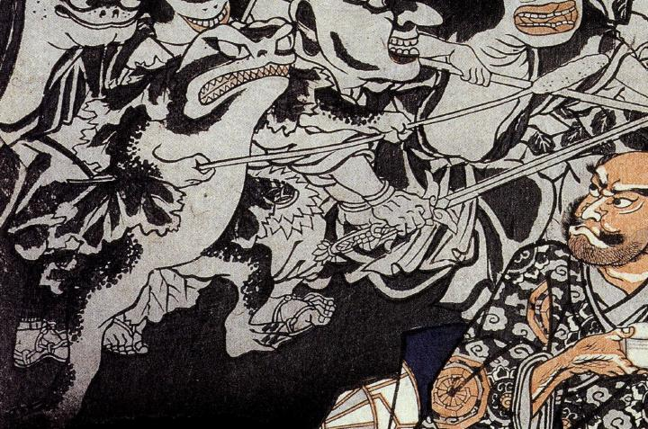

槍のように蒲の穂で突く蝦蟇の化物。葉の衣をまとっている。
著作者：歌川国芳／出典：親書誌：M80_naprstek_0017：源頼光公館土蜘作妖怪図；ミナモトライコウヤカタツチグモヨウカイヲナスズ／日付：2011／資源識別子：M80_naprstek_0017_0015_0000
Copyright (c)2010- International Research Center for Japanese Studies, Kyoto, Japan. All rights reserved.